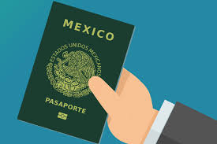

PASAPORTE MEXICANO

¿Qué es el pasaporte mexicano?
El pasaporte mexicano es un documento oficial que acredita la nacionalidad e identidad de las personas mexicanas en el extranjero. Es necesario para viajar fuera del país y es expedido por la Secretaría de Relaciones Exteriores (SRE).
Tipos de pasaporte
- Ordinario: para ciudadanos en general.
- Diplomático: para representantes del gobierno y personal diplomático.
- Oficial: para servidores públicos en misión oficial.
Requisitos para tramitarlo
- Acta de nacimiento certificada.
- Identificación oficial vigente (INE, cédula profesional, etc.).
- CURP actualizada.
- Comprobante de pago de derechos.
- Agendar cita en una oficina de la SRE.
Vigencia del pasaporte
- 3 años.
- 6 años.
- 10 años (para mayores de edad).